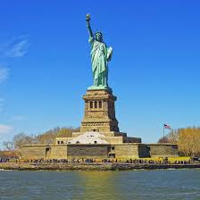

The Statue of Liberty against the Manhattan skyline.
"The Statue of Liberty Enlightening the World" was a gift of friendship from the people of France to the United States and is recognized as a universal symbol of freedom and democracy. The Statue of Liberty was dedicated on October 28, 1886. It was designated as a National Monument in 1924. Employees of the National Park Service have been caring for the colossal copper statue since 1933.
Steps to Visiting the Statue of Liberty
Step 1: Arrive at your point of departure, Battery Park NY or Liberty State Park NJ.
Step 2: If you printed your e-tickets you can go straight to the security check in line.
Step 3: The line to the ferry goes through a security check point.
Step 4:After going through the security check point, proceed to board the ferry.